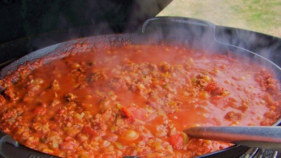

| Habanero Hellfire Chili |
|---|
| Ingredients |
| 1/2 pound bacon |
| 1 pound ground round |
| 1 pound ground pork |
| 1 green bell pepper, diced |
| 1 yellow onion, diced |
| 6 jalapeno peppers, seeded and chopped |
| 6 habanero peppers, seeded and chopped |
| 8 Anaheim peppers, seeded and diced |
| 2 cloves garlic, minced |
| 1 1/2 tablespoons ground cumin |
| 1 tablespoon crushed red pepper flakes |
| 3 tablespoons chili powder |
| 2 tablespoons beef bouillon granules |
| 1 (28 ounce) can crushed tomatoes |
| 2 (16 ounce) cans whole peeled
tomatoes, drained |
| 2 (16 ounce) cans chili beans, drained |
| 1 (12 fluid ounce) can beer |
| 3 ounces tomato paste |
| 1 ounce chile paste |
| 2 cups water |
| Instructions |
|---|
| 1. Place bacon in a large soup pot. Cook over medium high
heat until evenly brown. Drain excess grease, leaving enough to coat bottom of pot Remove bacon, drain on paper towels and chop. |
| 2. Brown beef and pork in pot over medium high heat. When meat
is browned, stir in the bell pepper, onion, jalapeno peppers, habanero peppers, Anaheim peppers, garlic, cumin, red pepper flakes, chili powder, bouillon, crushed tomatoes, whole tomatoes, beer, tomato paste, chile paste and water. |
| 3. Reduce heat to low and simmer for 45 to 60 minutes,
stirring occasionally. Add beans and bacon and continue simmering for another 30 minutes. |
| 4. Enjoy! |
|  |